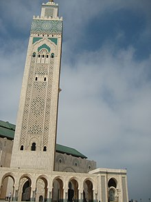

The Hassan II Mosque (Arabic: مسجد الحسن الثاني) is a mosque in Casablanca, Morocco. It is the second largest functioning mosque in Africa and is the 14th largest in the world.[citation needed] Its minaret is the world's second tallest minaret at 210 metres (689 ft). Completed in 1993, it was designed by Michel Pinseau under the guidance of King Hassan II and built by Moroccan artisans from all over the kingdom. The minaret is 60 stories high topped by a laser, the light from which is directed towards Mecca. The mosque stands on a promontory looking out to the Atlantic Ocean; worshippers can pray over the sea but there is no glass floor looking into the sea. The walls are of hand-crafted marble and the roof is retractable. A maximum of 105,000 worshippers can gather together for prayer: 25,000 inside the mosque hall and another 80,000 on the mosque's outside ground.
The historical context of the mosque began with the death of King Mohammed V in 1961. King Hassan II had requested for the best of the country's artisans to come forward and submit plans for a mausoleum to honour the departed king; it should "reflect the fervor and veneration with which this illustrious man was regarded." In 1980, during his birthday celebrations, Hassan II had made his ambitions very clear for creating a single landmark monument in Casablanca by stating: I wish Casablanca to be endowed with a large, fine building of which it can be proud until the end of time ... I want to build this mosque on the water, because God's throne is on the water. Therefore, the faithful who go there to pray, to praise the creator on firm soil, can contemplate God's sky and ocean. The building was commissioned by King Hassan II to be the most ambitious structure ever built in Morocco. It was designed by the French architect Michel Pinseau who had lived in Morocco, and was constructed by the civil engineering group Bouygues. Work commenced on July 12, 1986, and was conducted over a seven-year period. Construction was scheduled to be completed in 1989 ready for Hassan II's 60th birthday. During the most intense period of construction, 1400 men worked during the day and another 1100 during the night. 10,000 artists and craftsmen participated in building and beautifying the mosque. However, the building was not completed on schedule which delayed inauguration. The formal inauguration was subsequently chosen to be the 11th Rabi' al-Awwal of the year 1414 of the Hijra, corresponding to 30 August 1993, which also marked the eve of the anniversary of Prophet Muhammad’s birth. It was dedicated to the Sovereign of Morocco.
The building blends Islamic architecture and Moroccan elements, and reflects Moorish influences, while featuring an urban design.[12] It displays elements found in other Moroccan buildings such as the unfinished mosque in Rabat and the Koutoubia Mosque in Marrakesh. There are features from an old Roman fort converted into the Tomb of King Mohammed V. Other elements come from the Hassan Tower Mosque, the Dome of the Rock (also known as Qubbat al Sakhra 688–692 AD), the Great Mosque of Madina (705–710 AD), Kairouan Mosque in Tunisia (663 AD), the Great Mosque of Damascus (705–715 AD), the Great Mosque of Cordoba (785–786 AD), Quarawiyyin Mosque (956 and 1135 AD) in Morocco, the Great Mosque of Tlemcen (1136), and Djamaa el Kebir (1096). Its layout is known as the basilican plan, which is different from the common practice of a T-shaped plan adopted in many North African countries. The qibla wall is perpendicular to the naves which is said to be an unconventional layout, given that it is customary for the rows of worshipers facing Mecca to be as wide as possible rather than extend farther back (Halod and Khan 1997, 61). The adoption of this plan has been described as "a conflict between King Hassan II the ancient aristocrat and King Hassan II the contemporary leader who must develop commerce and industry in order meet the needs of his country."
The minaret is 210 metres (690 ft) tall[22] and was the tallest minaret in the world when completed in 1993.[23][24] It has a laser beam fitted at the top, which is electronically operated in the evening. It is oriented towards Mecca and has a range of 30 kilometres (19 mi). The minaret is said to enhance the visual alignment of the boulevard.[6] It is square in shape thrusting skyward. The base to the top width ratio of 1 to 8 (between basement and the summit) has a marble covering on the exterior with austere decoration. The faces of the facade have carved ornamentation with different materials. There are stitches of roudani tracetine on a 100,000 MP surface. This decorative material (with chrome and green as dominant colours), is a substitute for the use of bricks, the material used in many other notable minarets, and has given the mosque an extraordinary elegance.[25] Green tiles decorate the minaret for one third of the height from the top, and then changes colour to deep green or turquoise blue; it is said that in the Hassan II minaret, the designer had used his sea-foam green and God's blue to celebrate the life of a king.[26] The concrete used for the minaret was a special high-grade type, which could perform well under severe conditions of a combined action of strong wind and seismicity. This was achieved by the Science Department of the Bouygues Group, the contractors for the project, who developed an extra-strength concrete four times stronger than ordinary concrete. Called B.H.P (highly resistant concrete), it offers a resistance to compression value of 1200 bars per sqcm (claimed to be a world record) and has a very quick setting time.[21] This enabled the building of a taller structure with due underpinning of the foundation, while adhering to the construction schedule. Cranes were also designed to suit the height of the minaret for concreting. Hassan II Mosque Museum The museum opened its doors to the public after the construction of the mosque. It showcases art pieces from various traditional Moroccan arts as well as unused architectural elements of the mosque, such as carved stucco, painted wood ceilings, and zellij walls.